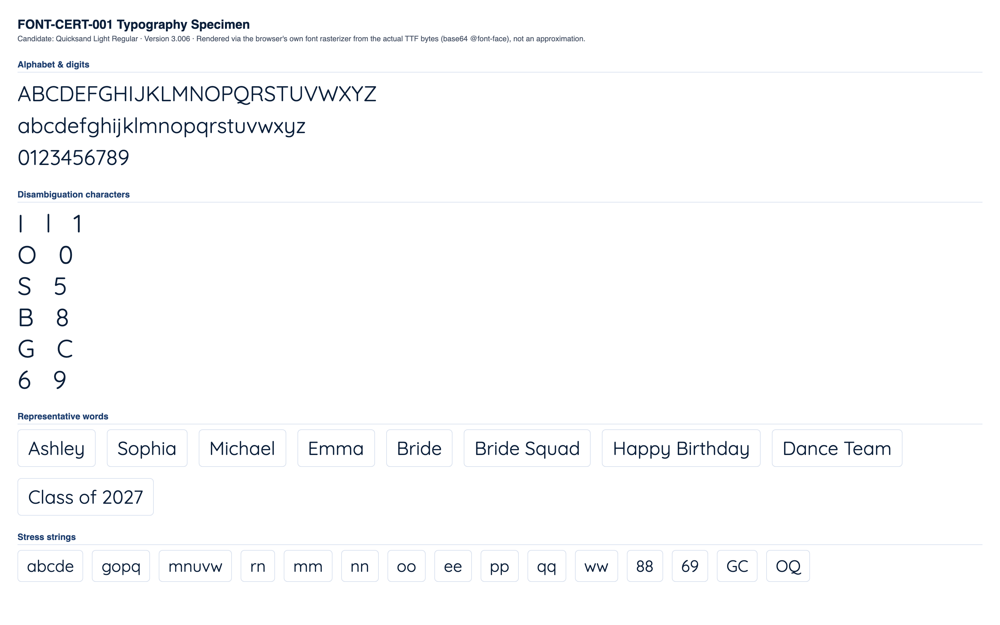

CONDITIONAL PASS
Classification and the feedback below are computed at the mid-range letter height for each stone size (the representative case). Full min/mid/max data is shown in section 4.
No blocking issues found.
Min and max height produce no more collisions or low-stone-count findings than mid height.
Medium
No blocking production failures, but 13 refinement note(s) were found (10 actionable item(s) below) -- readability, spacing, or anatomy concerns that would need addressing for production quality.
| Status | Check | Category | Detail |
|---|---|---|---|
| PASS | Successful TTF parsing | parsing | opentype.js parsed the file without error. |
| PASS | Outline format | structure | TrueType (quadratic) outlines. sfnt signature "0x00010000", opentype.js outlinesFormat="truetype". |
| PASS | Quadratic TrueType outlines | structure | TrueType file with quadratic curves confirmed: 200 curve commands found across 10 sampled glyphs. |
| PASS | unitsPerEm | structure | unitsPerEm = 1000 |
| PASS | Glyph count | structure | 812 glyphs (font.numGlyphs=812). |
| PASS | .notdef at glyph index 0 | structure | .notdef confirmed at glyph index 0. |
| PASS | Unicode cmap coverage | coverage | cmap maps 694 Unicode code point(s) to glyphs. |
| PASS | Required character coverage (A-Z, a-z, 0-9, space, . , ' - ! ?) | coverage | All 69 required characters map to a real glyph (glyph index != 0). |
| PASS | Required sfnt tables | structure | All required tables present: cmap, glyf, head, hhea, hmtx, loca, maxp, name, post, OS/2. |
| PASS | Family / subfamily / version / PostScript naming | naming | family="Quicksand Light", subfamily="Regular", version="Version 3.006", postScriptName="Quicksand-Light". |
| PASS | Ascender, descender, line gap, horizontal metrics | metrics | ascender=1000, descender=-250, hhea.lineGap=0, advanceWidthMax=1363, numberOfHMetrics=812 (hmtx table present: true). |
| PASS | Invalid or empty glyphs | geometry | No mapped, non-whitespace, non-invisible-by-design character resolves to an empty outline. |
| PASS | Open contours | geometry | Every required-character contour closes explicitly (an explicit "Z"/closepath command) or implicitly (its final point returns to its starting point). |
| WARNING | Self-intersections | geometry | 46 of 69 character(s) show 116 total crossing(s) (small counts: 1-4 per affected character) -- "A" (self:1, cross-contour:4), "B" (self:5, cross-contour:0), "D" (self:2, cross-contour:0), "E" (self:4, cross-contour:0), "F" (self:3, cross-contour:0), "G" (self:2, cross-contour:0), "H" (self:0, cross-contour:4), "K" (self:0, cross-contour:4), "L" (self:1, cross-contour:0), "M" (self:3, cross-contour:0), "N" (self:2, cross-contour:0), "P" (self:3, cross-contour:0), "Q" (self:1, cross-contour:2), "R" (self:4, cross-contour:0), "T" (self:0, cross-contour:2), "V" (self:1, cross-contour:0), "W" (self:3, cross-contour:0), "X" (self:0, cross-contour:4), "Y" (self:3, cross-contour:0), "Z" (self:2, cross-contour:0), "b" (self:2, cross-contour:0), "d" (self:2, cross-contour:0), "e" (self:3, cross-contour:0), "f" (self:0, cross-contour:4), "g" (self:2, cross-contour:0), "h" (self:1, cross-contour:0), "k" (self:0, cross-contour:4), "m" (self:2, cross-contour:0), "n" (self:1, cross-contour:0), "p" (self:2, cross-contour:0), "q" (self:2, cross-contour:0), "r" (self:1, cross-contour:0), "t" (self:0, cross-contour:4), "v" (self:1, cross-contour:0), "w" (self:3, cross-contour:0), "x" (self:0, cross-contour:4), "y" (self:1, cross-contour:0), "z" (self:2, cross-contour:0), "1" (self:1, cross-contour:0), "2" (self:1, cross-contour:0), "3" (self:2, cross-contour:0), "4" (self:6, cross-contour:0), "5" (self:2, cross-contour:0), "7" (self:1, cross-contour:0), "9" (self:1, cross-contour:0), "?" (self:1, cross-contour:0). Not production-blocking on its own (verify visually against rhinestone-specimen.png/typography-specimen.png -- a transversal crossing in the outline does not necessarily produce a visible defect once converted to stones). |
| WARNING | Zero-length or duplicate outline segments | geometry | 68 of 69 character(s) contain 692 raw zero-length draw command(s) total (a command whose endpoint exactly duplicates the current pen position -- draws nothing, harmless no-op, but real source-file redundancy), 0 duplicate outline segments. Not production-blocking: these commands have no visual or geometric effect. Per-character counts: "A" (zero-length:8, duplicate:0), "B" (zero-length:10, duplicate:0), "C" (zero-length:12, duplicate:0), "D" (zero-length:6, duplicate:0), "E" (zero-length:8, duplicate:0), "F" (zero-length:7, duplicate:0), "G" (zero-length:15, duplicate:0), "H" (zero-length:8, duplicate:0), +60 more. |
| PASS | Coordinates outside valid TrueType ranges | geometry | All required-character outline coordinates fall within the signed 16-bit range (-32768 to 32767). |
| PASS | Inconsistent or suspicious advance widths / side bearings | metrics | Advance widths for required characters cluster reasonably around the median (563 units). |
Rendered from the actual source TTF via a base64-embedded @font-face rule (typography), and through the real production pipeline FontManager → OpenTypeProvider → GeometryEngine.generateTextLayout() → StoneLayout (rhinestone), at this milestone's own physical letter-height range per stone size:
| Stone size | Min | Mid (representative) | Max |
|---|---|---|---|
| SS6 | 35mm | 42.5mm | 50mm |
| SS10 | 45mm | 52.5mm | 60mm |
| SS16 | 65mm | 77.5mm | 90mm |
| SS20 | 80mm | 95mm | 110mm |
| SS30 | 106mm | 108.5mm | 111mm |


Successful layout generation (a non-empty StoneLayout with no collisions) is not the same as visual readability -- see each height variant's readability metrics below for objective, threshold-based findings.
| SS6 | text height: 35mm |
|---|---|
| SS10 | text height: 45mm |
| SS16 | text height: 65mm |
| SS20 | text height: 80mm |
| SS30 | text height: 106mm |
| Pair | Size | Stone counts | Chamfer distance | Result |
|---|---|---|---|---|
| "I" vs "l" | SS16 | 11 / 11 | 0.0005 | WARNING |
| "l" vs "1" | SS16 | 11 / 12 | 0.0949 | PASS |
| "I" vs "1" | SS16 | 11 / 12 | 0.0946 | PASS |
| "O" vs "0" | SS16 | 33 / 29 | 0.0853 | WARNING |
| "S" vs "5" | SS16 | 25 / 23 | 0.0509 | WARNING |
| "B" vs "8" | SS16 | 36 / 30 | 0.0615 | WARNING |
| "G" vs "C" | SS16 | 28 / 22 | 0.0592 | WARNING |
| "Q" vs "O" | SS16 | 42 / 33 | 0.0725 | WARNING |
| "e" vs "c" | SS16 | 25 / 17 | 0.0873 | WARNING |
| "e" vs "o" | SS16 | 25 / 24 | 0.0723 | WARNING |
| "c" vs "o" | SS16 | 17 / 24 | 0.0798 | WARNING |
| "6" vs "9" | SS16 | 29 / 29 | 0.1020 | PASS |
Threshold: 0.09 (normalized, unit-height point clouds). Below threshold = flagged as visually similar.
| Char | SS6 | SS10 | SS16 | SS20 | SS30 |
|---|---|---|---|---|---|
| "A" | 25 | 23 | 25 | 26 | 26 |
| "B" | 38 | 35 | 36 | 39 | 40 |
| "C" | 22 | 21 | 22 | 24 | 23 |
| "D" | 34 | 31 | 33 | 36 | 34 |
| "E" | 27 | 24 | 27 | 26 | 26 |
| "F" | 24 | 21 | 21 | 22 | 21 |
| "G" | 31 | 29 | 28 | 30 | 32 |
| "H" | 30 | 26 | 26 | 30 | 28 |
| "I" | 11 | 10 | 11 | 11 | 11 |
| "J" | 16 | 15 | 16 | 17 | 17 |
| "K" | 29 | 27 | 27 | 29 | 29 |
| "L" | 17 | 14 | 15 | 17 | 16 |
| "M" | 36 | 35 | 35 | 39 | 37 |
| "N" | 34 | 30 | 32 | 33 | 33 |
| "O" | 33 | 32 | 33 | 35 | 35 |
| "P" | 27 | 26 | 26 | 28 | 27 |
| "Q" | 42 | 41 | 42 | 45 | 44 |
| "R" | 33 | 30 | 32 | 32 | 32 |
| "S" | 27 | 24 | 25 | 27 | 27 |
| "T" | 19 | 16 | 17 | 18 | 18 |
| "U" | 27 | 25 | 26 | 27 | 27 |
| "V" | 22 | 21 | 23 | 23 | 23 |
| "W" | 40 | 35 | 37 | 40 | 38 |
| "X" | 25 | 23 | 24 | 26 | 26 |
| "Y" | 18 | 17 | 17 | 19 | 18 |
| "Z" | 27 | 25 | 27 | 28 | 28 |
| "a" | 28 | 25 | 27 | 29 | 28 |
| "b" | 31 | 28 | 29 | 31 | 31 |
| "c" | 17 | 16 | 17 | 17 | 18 |
| "d" | 32 | 31 | 30 | 34 | 30 |
| "e" | 27 | 25 | 25 | 28 | 27 |
| "f" | 17 | 16 | 15 | 17 | 17 |
| "g" | 36 | 34 | 35 | 36 | 36 |
| "h" | 24 | 22 | 24 | 25 | 23 |
| "i" | 10 | 10 | 10 | 10 | 10 |
| "j" | 14 | 14 | 14 | 15 | 15 |
| "k" | 24 | 23 | 24 | 24 | 24 |
| "l" | 12 | 11 | 11 | 12 | 12 |
| "m" | 32 | 30 | 31 | 33 | 32 |
| "n" | 21 | 19 | 21 | 22 | 21 |
| "o" | 24 | 23 | 24 | 25 | 25 |
| "p" | 29 | 28 | 29 | 30 | 28 |
| "q" | 31 | 28 | 29 | 32 | 31 |
| "r" | 13 | 12 | 12 | 13 | 13 |
| "s" | 20 | 19 | 19 | 21 | 20 |
| "t" | 14 | 12 | 14 | 14 | 14 |
| "u" | 20 | 19 | 19 | 20 | 20 |
| "v" | 16 | 16 | 16 | 17 | 15 |
| "w" | 29 | 27 | 26 | 28 | 27 |
| "x" | 18 | 17 | 18 | 19 | 19 |
| "y" | 29 | 27 | 28 | 29 | 30 |
| "z" | 19 | 17 | 18 | 18 | 19 |
| "0" | 29 | 27 | 29 | 30 | 30 |
| "1" | 14 | 13 | 12 | 14 | 12 |
| "2" | 22 | 21 | 21 | 23 | 22 |
| "3" | 23 | 22 | 22 | 24 | 23 |
| "4" | 23 | 21 | 22 | 24 | 21 |
| "5" | 26 | 22 | 23 | 27 | 25 |
| "6" | 28 | 28 | 29 | 31 | 30 |
| "7" | 16 | 16 | 17 | 17 | 17 |
| "8" | 32 | 29 | 30 | 35 | 33 |
| "9" | 30 | 26 | 29 | 30 | 29 |
Cell values are stone count per glyph at that stone size ("coll." = colliding stone pairs found).
| Word | SS6 | SS10 | SS16 | SS20 | SS30 |
|---|---|---|---|---|---|
| Ashley | 137 stones, min spacing 2.02mm, 6 cluster(s) | 127 stones, min spacing 2.81mm, 8 cluster(s) | 132 stones, min spacing 4.10mm, 8 cluster(s) | 141 stones, min spacing 4.73mm, 8 cluster(s) | 138 stones, min spacing 6.44mm, 8 cluster(s) |
| Sophia | 142 stones, min spacing 2.01mm, 6 cluster(s) | 132 stones, min spacing 2.82mm, 7 cluster(s) | 139 stones, min spacing 4.13mm, 6 cluster(s) | 146 stones, min spacing 4.75mm, 6 cluster(s) | 141 stones, min spacing 6.41mm, 7 cluster(s) |
| Michael | 154 stones, min spacing 2.02mm, 7 cluster(s) | 144 stones, min spacing 2.84mm, 7 cluster(s) | 149 stones, min spacing 4.05mm, 8 cluster(s) | 160 stones, min spacing 4.77mm, 8 cluster(s) | 155 stones, min spacing 6.41mm, 9 cluster(s) |
| Emma | 119 stones, min spacing 2.02mm, 7 cluster(s) | 109 stones, min spacing 3.02mm, 4 cluster(s) | 116 stones, min spacing 4.02mm, 8 cluster(s) | 121 stones, min spacing 4.81mm, 7 cluster(s) | 118 stones, min spacing 6.41mm, 6 cluster(s) |
| Bride | 120 stones, min spacing 2.02mm, 5 cluster(s) | 113 stones, min spacing 2.82mm, 5 cluster(s) | 113 stones, min spacing 4.21mm, 7 cluster(s) | 124 stones, min spacing 4.72mm, 6 cluster(s) | 120 stones, min spacing 6.44mm, 8 cluster(s) |
| Bride Squad | 258 stones, min spacing 2.01mm, 10 cluster(s) | 240 stones, min spacing 2.82mm, 11 cluster(s) | 243 stones, min spacing 4.21mm, 14 cluster(s) | 266 stones, min spacing 4.70mm, 12 cluster(s) | 256 stones, min spacing 6.41mm, 15 cluster(s) |
| Happy Birthday | 333 stones, min spacing 2.01mm, 12 cluster(s) | 308 stones, min spacing 2.82mm, 18 cluster(s) | 320 stones, min spacing 4.10mm, 18 cluster(s) | 341 stones, min spacing 4.72mm, 17 cluster(s) | 329 stones, min spacing 6.41mm, 20 cluster(s) |
| Dance Team | 233 stones, min spacing 2.01mm, 10 cluster(s) | 212 stones, min spacing 2.84mm, 10 cluster(s) | 223 stones, min spacing 4.10mm, 14 cluster(s) | 240 stones, min spacing 4.72mm, 13 cluster(s) | 233 stones, min spacing 6.41mm, 13 cluster(s) |
| Class of 2027 | 232 stones, min spacing 2.01mm, 12 cluster(s) | 219 stones, min spacing 2.96mm, 12 cluster(s) | 225 stones, min spacing 4.02mm, 12 cluster(s) | 242 stones, min spacing 4.73mm, 14 cluster(s) | 236 stones, min spacing 6.41mm, 15 cluster(s) |
No glyph/size combination falls below the minimum meaningful stone count.
No counter-bearing glyph/size combination falls below the counter-bearing stone-count floor.
| Pair | Size | Chamfer distance | Stone counts |
|---|---|---|---|
| "I" vs "l" | SS6 | 0.0255 | 11 / 12 |
| "l" vs "1" | SS6 | 0.0824 | 12 / 14 |
| "I" vs "1" | SS6 | 0.0833 | 11 / 14 |
| "O" vs "0" | SS6 | 0.0856 | 33 / 29 |
| "S" vs "5" | SS6 | 0.0500 | 27 / 26 |
| "B" vs "8" | SS6 | 0.0604 | 38 / 32 |
| "G" vs "C" | SS6 | 0.0642 | 31 / 22 |
| "Q" vs "O" | SS6 | 0.0726 | 42 / 33 |
| "e" vs "c" | SS6 | 0.0897 | 27 / 17 |
| "e" vs "o" | SS6 | 0.0677 | 27 / 24 |
| "c" vs "o" | SS6 | 0.0812 | 17 / 24 |
| "I" vs "l" | SS10 | 0.0237 | 10 / 11 |
| "l" vs "1" | SS10 | 0.0619 | 11 / 13 |
| "I" vs "1" | SS10 | 0.0685 | 10 / 13 |
| "O" vs "0" | SS10 | 0.0798 | 32 / 27 |
| "S" vs "5" | SS10 | 0.0553 | 24 / 22 |
| "B" vs "8" | SS10 | 0.0616 | 35 / 29 |
| "G" vs "C" | SS10 | 0.0720 | 29 / 21 |
| "Q" vs "O" | SS10 | 0.0763 | 41 / 32 |
| "e" vs "c" | SS10 | 0.0829 | 25 / 16 |
| "e" vs "o" | SS10 | 0.0708 | 25 / 23 |
| "c" vs "o" | SS10 | 0.0794 | 16 / 23 |
| "I" vs "l" | SS16 | 0.0005 | 11 / 11 |
| "O" vs "0" | SS16 | 0.0853 | 33 / 29 |
| "S" vs "5" | SS16 | 0.0509 | 25 / 23 |
| "B" vs "8" | SS16 | 0.0615 | 36 / 30 |
| "G" vs "C" | SS16 | 0.0592 | 28 / 22 |
| "Q" vs "O" | SS16 | 0.0725 | 42 / 33 |
| "e" vs "c" | SS16 | 0.0873 | 25 / 17 |
| "e" vs "o" | SS16 | 0.0723 | 25 / 24 |
| "c" vs "o" | SS16 | 0.0798 | 17 / 24 |
| "I" vs "l" | SS20 | 0.0217 | 11 / 12 |
| "O" vs "0" | SS20 | 0.0798 | 35 / 30 |
| "S" vs "5" | SS20 | 0.0476 | 27 / 27 |
| "B" vs "8" | SS20 | 0.0624 | 39 / 35 |
| "G" vs "C" | SS20 | 0.0593 | 30 / 24 |
| "Q" vs "O" | SS20 | 0.0759 | 45 / 35 |
| "e" vs "c" | SS20 | 0.0864 | 28 / 17 |
| "e" vs "o" | SS20 | 0.0796 | 28 / 25 |
| "c" vs "o" | SS20 | 0.0827 | 17 / 25 |
| "I" vs "l" | SS30 | 0.0217 | 11 / 12 |
| "l" vs "1" | SS30 | 0.0722 | 12 / 12 |
| "I" vs "1" | SS30 | 0.0745 | 11 / 12 |
| "O" vs "0" | SS30 | 0.0784 | 35 / 30 |
| "S" vs "5" | SS30 | 0.0492 | 27 / 25 |
| "B" vs "8" | SS30 | 0.0656 | 40 / 33 |
| "G" vs "C" | SS30 | 0.0653 | 32 / 23 |
| "Q" vs "O" | SS30 | 0.0729 | 44 / 35 |
| "e" vs "c" | SS30 | 0.0884 | 27 / 18 |
| "e" vs "o" | SS30 | 0.0742 | 27 / 25 |
| "c" vs "o" | SS30 | 0.0813 | 18 / 25 |
| Size | Diameter | Scale | Rendered stone size | Result |
|---|---|---|---|---|
| SS6 | 2mm | 5px/mm | 10px | PASS |
| SS10 | 2.8mm | 4px/mm | 11.2px | PASS |
| SS16 | 4mm | 3.5px/mm | 14px | PASS |
| SS20 | 4.7mm | 3px/mm | 14.1px | PASS |
| SS30 | 6.4mm | 2.5px/mm | 16px | PASS |
| SS6 | text height: 42.5mm |
|---|---|
| SS10 | text height: 52.5mm |
| SS16 | text height: 77.5mm |
| SS20 | text height: 95mm |
| SS30 | text height: 108.5mm |
| Pair | Size | Stone counts | Chamfer distance | Result |
|---|---|---|---|---|
| "I" vs "l" | SS16 | 13 / 14 | 0.0211 | WARNING |
| "l" vs "1" | SS16 | 14 / 16 | 0.0605 | WARNING |
| "I" vs "1" | SS16 | 13 / 16 | 0.0685 | WARNING |
| "O" vs "0" | SS16 | 40 / 34 | 0.0805 | WARNING |
| "S" vs "5" | SS16 | 33 / 29 | 0.0445 | WARNING |
| "B" vs "8" | SS16 | 44 / 39 | 0.0613 | WARNING |
| "G" vs "C" | SS16 | 36 / 27 | 0.0529 | WARNING |
| "Q" vs "O" | SS16 | 52 / 40 | 0.0732 | WARNING |
| "e" vs "c" | SS16 | 32 / 19 | 0.0916 | PASS |
| "e" vs "o" | SS16 | 32 / 29 | 0.0687 | WARNING |
| "c" vs "o" | SS16 | 19 / 29 | 0.0918 | PASS |
| "6" vs "9" | SS16 | 36 / 34 | 0.1030 | PASS |
Threshold: 0.09 (normalized, unit-height point clouds). Below threshold = flagged as visually similar.
| Char | SS6 | SS10 | SS16 | SS20 | SS30 |
|---|---|---|---|---|---|
| "A" | 34 | 28 | 30 | 32 | 26 |
| "B" | 47 | 43 | 44 | 47 | 40 |
| "C" | 30 | 25 | 27 | 28 | 24 |
| "D" | 44 | 38 | 40 | 42 | 35 |
| "E" | 31 | 27 | 34 | 35 | 28 |
| "F" | 32 | 24 | 27 | 27 | 23 |
| "G" | 42 | 35 | 36 | 38 | 33 |
| "H" | 34 | 31 | 33 | 33 | 28 |
| "I" | 25 | 12 | 13 | 13 | 12 |
| "J" | 22 | 17 | 19 | 21 | 16 |
| "K" | 36 | 31 | 33 | 35 | 28 |
| "L" | 20 | 18 | 18 | 20 | 17 |
| "M" | 47 | 40 | 44 | 45 | 40 |
| "N" | 39 | 36 | 37 | 40 | 33 |
| "O" | 44 | 37 | 40 | 42 | 35 |
| "P" | 34 | 29 | 32 | 33 | 28 |
| "Q" | 57 | 49 | 52 | 53 | 44 |
| "R" | 46 | 37 | 38 | 40 | 33 |
| "S" | 43 | 33 | 33 | 37 | 26 |
| "T" | 23 | 19 | 20 | 22 | 18 |
| "U" | 32 | 29 | 32 | 32 | 28 |
| "V" | 28 | 25 | 26 | 28 | 23 |
| "W" | 52 | 42 | 44 | 48 | 39 |
| "X" | 32 | 28 | 30 | 32 | 27 |
| "Y" | 22 | 20 | 21 | 23 | 18 |
| "Z" | 35 | 30 | 32 | 35 | 29 |
| "a" | 34 | 29 | 33 | 34 | 29 |
| "b" | 37 | 34 | 36 | 39 | 31 |
| "c" | 22 | 18 | 19 | 20 | 17 |
| "d" | 40 | 33 | 37 | 39 | 33 |
| "e" | 33 | 30 | 32 | 33 | 29 |
| "f" | 18 | 18 | 19 | 20 | 18 |
| "g" | 45 | 39 | 43 | 43 | 36 |
| "h" | 29 | 26 | 29 | 30 | 25 |
| "i" | 14 | 11 | 12 | 12 | 11 |
| "j" | 19 | 16 | 16 | 17 | 15 |
| "k" | 29 | 26 | 27 | 30 | 24 |
| "l" | 14 | 13 | 14 | 14 | 12 |
| "m" | 45 | 36 | 39 | 40 | 32 |
| "n" | 25 | 23 | 24 | 26 | 22 |
| "o" | 30 | 27 | 29 | 30 | 26 |
| "p" | 36 | 32 | 35 | 38 | 30 |
| "q" | 38 | 33 | 35 | 38 | 31 |
| "r" | 17 | 14 | 15 | 16 | 14 |
| "s" | 26 | 22 | 23 | 24 | 21 |
| "t" | 19 | 16 | 16 | 19 | 14 |
| "u" | 23 | 22 | 22 | 25 | 20 |
| "v" | 21 | 19 | 20 | 21 | 17 |
| "w" | 34 | 29 | 31 | 34 | 28 |
| "x" | 23 | 20 | 21 | 24 | 19 |
| "y" | 36 | 33 | 34 | 36 | 30 |
| "z" | 21 | 19 | 23 | 22 | 18 |
| "0" | 37 | 32 | 34 | 36 | 31 |
| "1" | 16 | 16 | 16 | 17 | 14 |
| "2" | 37 | 26 | 28 | 31 | 23 |
| "3" | 33 | 26 | 29 | 32 | 24 |
| "4" | 29 | 24 | 29 | 29 | 21 |
| "5" | 36 | 26 | 29 | 30 | 26 |
| "6" | 43 | 33 | 36 | 39 | 31 |
| "7" | 20 | 19 | 20 | 22 | 18 |
| "8" | 41 | 35 | 39 | 40 | 33 |
| "9" | 37 | 32 | 34 | 36 | 31 |
Cell values are stone count per glyph at that stone size ("coll." = colliding stone pairs found).
| Word | SS6 | SS10 | SS16 | SS20 | SS30 |
|---|---|---|---|---|---|
| Ashley | 172 stones, min spacing 2.00mm, 6 cluster(s) | 152 stones, min spacing 2.86mm, 8 cluster(s) | 162 stones, min spacing 4.08mm, 7 cluster(s) | 169 stones, min spacing 4.84mm, 9 cluster(s) | 143 stones, min spacing 6.46mm, 8 cluster(s) |
| Sophia | 186 stones, min spacing 2.00mm, 8 cluster(s) | 158 stones, min spacing 2.81mm, 6 cluster(s) | 171 stones, min spacing 4.00mm, 7 cluster(s) | 181 stones, min spacing 4.77mm, 7 cluster(s) | 147 stones, min spacing 6.46mm, 7 cluster(s) |
| Michael | 193 stones, min spacing 2.01mm, 8 cluster(s) | 167 stones, min spacing 2.91mm, 7 cluster(s) | 183 stones, min spacing 4.00mm, 8 cluster(s) | 188 stones, min spacing 4.76mm, 10 cluster(s) | 163 stones, min spacing 6.40mm, 8 cluster(s) |
| Emma | 155 stones, min spacing 2.03mm, 7 cluster(s) | 128 stones, min spacing 2.85mm, 6 cluster(s) | 145 stones, min spacing 4.04mm, 5 cluster(s) | 149 stones, min spacing 4.85mm, 9 cluster(s) | 121 stones, min spacing 6.48mm, 6 cluster(s) |
| Bride | 151 stones, min spacing 2.01mm, 6 cluster(s) | 131 stones, min spacing 2.84mm, 7 cluster(s) | 140 stones, min spacing 4.00mm, 8 cluster(s) | 147 stones, min spacing 4.78mm, 8 cluster(s) | 127 stones, min spacing 6.41mm, 6 cluster(s) |
| Bride Squad | 329 stones, min spacing 2.00mm, 12 cluster(s) | 281 stones, min spacing 2.81mm, 13 cluster(s) | 300 stones, min spacing 4.00mm, 15 cluster(s) | 320 stones, min spacing 4.77mm, 15 cluster(s) | 266 stones, min spacing 6.41mm, 14 cluster(s) |
| Happy Birthday | 412 stones, min spacing 2.04mm, 17 cluster(s) | 362 stones, min spacing 2.84mm, 17 cluster(s) | 390 stones, min spacing 4.00mm, 16 cluster(s) | 412 stones, min spacing 4.77mm, 20 cluster(s) | 343 stones, min spacing 6.40mm, 19 cluster(s) |
| Dance Team | 293 stones, min spacing 2.00mm, 10 cluster(s) | 252 stones, min spacing 2.81mm, 10 cluster(s) | 272 stones, min spacing 4.00mm, 11 cluster(s) | 284 stones, min spacing 4.74mm, 15 cluster(s) | 240 stones, min spacing 6.48mm, 14 cluster(s) |
| Class of 2027 | 309 stones, min spacing 2.00mm, 13 cluster(s) | 259 stones, min spacing 2.81mm, 12 cluster(s) | 278 stones, min spacing 4.08mm, 12 cluster(s) | 294 stones, min spacing 4.71mm, 11 cluster(s) | 246 stones, min spacing 6.48mm, 12 cluster(s) |
No glyph/size combination falls below the minimum meaningful stone count.
No counter-bearing glyph/size combination falls below the counter-bearing stone-count floor.
| Pair | Size | Chamfer distance | Stone counts |
|---|---|---|---|
| "I" vs "l" | SS6 | 0.0365 | 25 / 14 |
| "l" vs "1" | SS6 | 0.0883 | 14 / 16 |
| "I" vs "1" | SS6 | 0.0756 | 25 / 16 |
| "O" vs "0" | SS6 | 0.0781 | 44 / 37 |
| "S" vs "5" | SS6 | 0.0471 | 43 / 36 |
| "B" vs "8" | SS6 | 0.0569 | 47 / 41 |
| "G" vs "C" | SS6 | 0.0774 | 42 / 30 |
| "Q" vs "O" | SS6 | 0.0722 | 57 / 44 |
| "e" vs "o" | SS6 | 0.0718 | 33 / 30 |
| "c" vs "o" | SS6 | 0.0885 | 22 / 30 |
| "I" vs "l" | SS10 | 0.0203 | 12 / 13 |
| "l" vs "1" | SS10 | 0.0880 | 13 / 16 |
| "O" vs "0" | SS10 | 0.0826 | 37 / 32 |
| "S" vs "5" | SS10 | 0.0442 | 33 / 26 |
| "B" vs "8" | SS10 | 0.0605 | 43 / 35 |
| "G" vs "C" | SS10 | 0.0637 | 35 / 25 |
| "Q" vs "O" | SS10 | 0.0759 | 49 / 37 |
| "e" vs "o" | SS10 | 0.0654 | 30 / 27 |
| "c" vs "o" | SS10 | 0.0790 | 18 / 27 |
| "I" vs "l" | SS16 | 0.0211 | 13 / 14 |
| "l" vs "1" | SS16 | 0.0605 | 14 / 16 |
| "I" vs "1" | SS16 | 0.0685 | 13 / 16 |
| "O" vs "0" | SS16 | 0.0805 | 40 / 34 |
| "S" vs "5" | SS16 | 0.0445 | 33 / 29 |
| "B" vs "8" | SS16 | 0.0613 | 44 / 39 |
| "G" vs "C" | SS16 | 0.0529 | 36 / 27 |
| "Q" vs "O" | SS16 | 0.0732 | 52 / 40 |
| "e" vs "o" | SS16 | 0.0687 | 32 / 29 |
| "I" vs "l" | SS20 | 0.0185 | 13 / 14 |
| "l" vs "1" | SS20 | 0.0731 | 14 / 17 |
| "I" vs "1" | SS20 | 0.0717 | 13 / 17 |
| "O" vs "0" | SS20 | 0.0792 | 42 / 36 |
| "S" vs "5" | SS20 | 0.0431 | 37 / 30 |
| "B" vs "8" | SS20 | 0.0571 | 47 / 40 |
| "G" vs "C" | SS20 | 0.0522 | 38 / 28 |
| "Q" vs "O" | SS20 | 0.0729 | 53 / 42 |
| "e" vs "o" | SS20 | 0.0664 | 33 / 30 |
| "c" vs "o" | SS20 | 0.0844 | 20 / 30 |
| "I" vs "l" | SS30 | 0.0081 | 12 / 12 |
| "l" vs "1" | SS30 | 0.0884 | 12 / 14 |
| "I" vs "1" | SS30 | 0.0846 | 12 / 14 |
| "O" vs "0" | SS30 | 0.0788 | 35 / 31 |
| "S" vs "5" | SS30 | 0.0478 | 26 / 26 |
| "B" vs "8" | SS30 | 0.0597 | 40 / 33 |
| "G" vs "C" | SS30 | 0.0617 | 33 / 24 |
| "Q" vs "O" | SS30 | 0.0744 | 44 / 35 |
| "e" vs "c" | SS30 | 0.0886 | 29 / 17 |
| "e" vs "o" | SS30 | 0.0757 | 29 / 26 |
| "c" vs "o" | SS30 | 0.0791 | 17 / 26 |
| Size | Diameter | Scale | Rendered stone size | Result |
|---|---|---|---|---|
| SS6 | 2mm | 5px/mm | 10px | PASS |
| SS10 | 2.8mm | 4px/mm | 11.2px | PASS |
| SS16 | 4mm | 3.5px/mm | 14px | PASS |
| SS20 | 4.7mm | 3px/mm | 14.1px | PASS |
| SS30 | 6.4mm | 2.5px/mm | 16px | PASS |
| SS6 | text height: 50mm |
|---|---|
| SS10 | text height: 60mm |
| SS16 | text height: 90mm |
| SS20 | text height: 110mm |
| SS30 | text height: 111mm |
| Pair | Size | Stone counts | Chamfer distance | Result |
|---|---|---|---|---|
| "I" vs "l" | SS16 | 15 / 16 | 0.0169 | WARNING |
| "l" vs "1" | SS16 | 16 / 22 | 0.0699 | WARNING |
| "I" vs "1" | SS16 | 15 / 22 | 0.0735 | WARNING |
| "O" vs "0" | SS16 | 53 / 49 | 0.0776 | WARNING |
| "S" vs "5" | SS16 | 53 / 39 | 0.0454 | WARNING |
| "B" vs "8" | SS16 | 66 / 51 | 0.0532 | WARNING |
| "G" vs "C" | SS16 | 55 / 37 | 0.0609 | WARNING |
| "Q" vs "O" | SS16 | 71 / 53 | 0.0700 | WARNING |
| "e" vs "c" | SS16 | 39 / 28 | 0.0924 | PASS |
| "e" vs "o" | SS16 | 39 / 35 | 0.0668 | WARNING |
| "c" vs "o" | SS16 | 28 / 35 | 0.0844 | WARNING |
| "6" vs "9" | SS16 | 49 / 47 | 0.0975 | PASS |
Threshold: 0.09 (normalized, unit-height point clouds). Below threshold = flagged as visually similar.
| Char | SS6 | SS10 | SS16 | SS20 | SS30 |
|---|---|---|---|---|---|
| "A" | 59 | 33 | 47 | 47 | 26 |
| "B" | 97 | 56 | 66 | 78 | 41 |
| "C" | 52 | 31 | 37 | 44 | 24 |
| "D" | 91 | 46 | 53 | 75 | 36 |
| "E" | 70 | 35 | 49 | 45 | 27 |
| "F" | 55 | 26 | 29 | 43 | 22 |
| "G" | 82 | 43 | 55 | 62 | 34 |
| "H" | 74 | 33 | 63 | 39 | 29 |
| "I" | 30 | 14 | 15 | 30 | 12 |
| "J" | 42 | 22 | 34 | 40 | 17 |
| "K" | 66 | 36 | 55 | 59 | 29 |
| "L" | 43 | 20 | 41 | 44 | 17 |
| "M" | 87 | 48 | 52 | 54 | 39 |
| "N" | 46 | 42 | 46 | 49 | 36 |
| "O" | 90 | 46 | 53 | 67 | 36 |
| "P" | 70 | 40 | 43 | 55 | 29 |
| "Q" | 113 | 59 | 71 | 85 | 45 |
| "R" | 80 | 43 | 57 | 72 | 35 |
| "S" | 70 | 47 | 53 | 62 | 27 |
| "T" | 47 | 23 | 24 | 27 | 19 |
| "U" | 70 | 33 | 39 | 60 | 28 |
| "V" | 60 | 28 | 31 | 32 | 24 |
| "W" | 94 | 60 | 65 | 69 | 40 |
| "X" | 52 | 32 | 36 | 52 | 28 |
| "Y" | 46 | 28 | 25 | 26 | 20 |
| "Z" | 46 | 36 | 38 | 40 | 30 |
| "a" | 52 | 37 | 39 | 44 | 28 |
| "b" | 68 | 40 | 45 | 54 | 31 |
| "c" | 43 | 23 | 28 | 28 | 17 |
| "d" | 66 | 40 | 45 | 53 | 32 |
| "e" | 62 | 34 | 39 | 44 | 28 |
| "f" | 40 | 21 | 34 | 37 | 18 |
| "g" | 72 | 46 | 53 | 57 | 38 |
| "h" | 58 | 31 | 32 | 43 | 26 |
| "i" | 27 | 13 | 14 | 14 | 11 |
| "j" | 37 | 19 | 31 | 21 | 15 |
| "k" | 55 | 30 | 32 | 55 | 26 |
| "l" | 31 | 15 | 16 | 16 | 12 |
| "m" | 77 | 47 | 47 | 64 | 35 |
| "n" | 49 | 31 | 42 | 42 | 22 |
| "o" | 54 | 31 | 35 | 38 | 26 |
| "p" | 64 | 40 | 44 | 49 | 32 |
| "q" | 63 | 41 | 52 | 48 | 31 |
| "r" | 26 | 17 | 18 | 25 | 12 |
| "s" | 44 | 30 | 33 | 33 | 21 |
| "t" | 35 | 20 | 19 | 34 | 16 |
| "u" | 47 | 24 | 32 | 36 | 21 |
| "v" | 43 | 21 | 33 | 32 | 16 |
| "w" | 59 | 36 | 44 | 47 | 28 |
| "x" | 35 | 24 | 26 | 39 | 20 |
| "y" | 65 | 39 | 43 | 43 | 31 |
| "z" | 37 | 23 | 32 | 27 | 19 |
| "0" | 77 | 39 | 49 | 61 | 31 |
| "1" | 36 | 18 | 22 | 36 | 13 |
| "2" | 62 | 31 | 45 | 53 | 24 |
| "3" | 66 | 35 | 41 | 57 | 25 |
| "4" | 56 | 32 | 45 | 42 | 25 |
| "5" | 62 | 34 | 39 | 52 | 27 |
| "6" | 66 | 40 | 49 | 55 | 31 |
| "7" | 46 | 21 | 30 | 39 | 17 |
| "8" | 79 | 40 | 51 | 60 | 33 |
| "9" | 66 | 41 | 47 | 56 | 31 |
Cell values are stone count per glyph at that stone size ("coll." = colliding stone pairs found).
| Word | SS6 | SS10 | SS16 | SS20 | SS30 |
|---|---|---|---|---|---|
| Ashley | 319 stones, min spacing 2.00mm, 6 cluster(s) | 182 stones, min spacing 2.80mm, 6 cluster(s) | 210 stones, min spacing 4.00mm, 7 cluster(s) | 226 stones, min spacing 4.70mm, 7 cluster(s) | 144 stones, min spacing 6.46mm, 10 cluster(s) |
| Sophia | 325 stones, min spacing 2.00mm, 8 cluster(s) | 199 stones, min spacing 2.82mm, 7 cluster(s) | 217 stones, min spacing 4.01mm, 9 cluster(s) | 250 stones, min spacing 4.71mm, 9 cluster(s) | 150 stones, min spacing 6.46mm, 8 cluster(s) |
| Michael | 360 stones, min spacing 2.00mm, 9 cluster(s) | 201 stones, min spacing 2.80mm, 8 cluster(s) | 220 stones, min spacing 4.01mm, 10 cluster(s) | 243 stones, min spacing 4.71mm, 9 cluster(s) | 161 stones, min spacing 6.45mm, 10 cluster(s) |
| Emma | 276 stones, min spacing 2.01mm, 5 cluster(s) | 166 stones, min spacing 2.81mm, 8 cluster(s) | 182 stones, min spacing 4.08mm, 5 cluster(s) | 217 stones, min spacing 4.70mm, 5 cluster(s) | 125 stones, min spacing 6.55mm, 5 cluster(s) |
| Bride | 278 stones, min spacing 2.00mm, 7 cluster(s) | 160 stones, min spacing 2.81mm, 8 cluster(s) | 182 stones, min spacing 4.01mm, 7 cluster(s) | 214 stones, min spacing 4.71mm, 6 cluster(s) | 124 stones, min spacing 6.65mm, 8 cluster(s) |
| Bride Squad | 576 stones, min spacing 2.00mm, 13 cluster(s) | 349 stones, min spacing 2.81mm, 16 cluster(s) | 403 stones, min spacing 4.01mm, 15 cluster(s) | 457 stones, min spacing 4.71mm, 14 cluster(s) | 263 stones, min spacing 6.63mm, 15 cluster(s) |
| Happy Birthday | 745 stones, min spacing 2.00mm, 16 cluster(s) | 442 stones, min spacing 2.80mm, 19 cluster(s) | 509 stones, min spacing 4.01mm, 20 cluster(s) | 558 stones, min spacing 4.71mm, 19 cluster(s) | 349 stones, min spacing 6.46mm, 20 cluster(s) |
| Dance Team | 535 stones, min spacing 2.00mm, 11 cluster(s) | 312 stones, min spacing 2.80mm, 11 cluster(s) | 350 stones, min spacing 4.00mm, 12 cluster(s) | 412 stones, min spacing 4.71mm, 11 cluster(s) | 241 stones, min spacing 6.56mm, 13 cluster(s) |
| Class of 2027 | 564 stones, min spacing 2.00mm, 12 cluster(s) | 317 stones, min spacing 2.83mm, 14 cluster(s) | 396 stones, min spacing 4.00mm, 14 cluster(s) | 451 stones, min spacing 4.71mm, 12 cluster(s) | 246 stones, min spacing 6.47mm, 12 cluster(s) |
No glyph/size combination falls below the minimum meaningful stone count.
No counter-bearing glyph/size combination falls below the counter-bearing stone-count floor.
| Pair | Size | Chamfer distance | Stone counts |
|---|---|---|---|
| "I" vs "l" | SS6 | 0.0170 | 30 / 31 |
| "l" vs "1" | SS6 | 0.0762 | 31 / 36 |
| "I" vs "1" | SS6 | 0.0734 | 30 / 36 |
| "O" vs "0" | SS6 | 0.0610 | 90 / 77 |
| "S" vs "5" | SS6 | 0.0403 | 70 / 62 |
| "B" vs "8" | SS6 | 0.0425 | 97 / 79 |
| "G" vs "C" | SS6 | 0.0493 | 82 / 52 |
| "Q" vs "O" | SS6 | 0.0564 | 113 / 90 |
| "e" vs "c" | SS6 | 0.0722 | 62 / 43 |
| "e" vs "o" | SS6 | 0.0601 | 62 / 54 |
| "c" vs "o" | SS6 | 0.0640 | 43 / 54 |
| "6" vs "9" | SS6 | 0.0799 | 66 / 66 |
| "I" vs "l" | SS10 | 0.0195 | 14 / 15 |
| "l" vs "1" | SS10 | 0.0782 | 15 / 18 |
| "I" vs "1" | SS10 | 0.0844 | 14 / 18 |
| "O" vs "0" | SS10 | 0.0787 | 46 / 39 |
| "S" vs "5" | SS10 | 0.0428 | 47 / 34 |
| "B" vs "8" | SS10 | 0.0575 | 56 / 40 |
| "G" vs "C" | SS10 | 0.0596 | 43 / 31 |
| "Q" vs "O" | SS10 | 0.0741 | 59 / 46 |
| "e" vs "c" | SS10 | 0.0860 | 34 / 23 |
| "e" vs "o" | SS10 | 0.0648 | 34 / 31 |
| "c" vs "o" | SS10 | 0.0799 | 23 / 31 |
| "I" vs "l" | SS16 | 0.0169 | 15 / 16 |
| "l" vs "1" | SS16 | 0.0699 | 16 / 22 |
| "I" vs "1" | SS16 | 0.0735 | 15 / 22 |
| "O" vs "0" | SS16 | 0.0776 | 53 / 49 |
| "S" vs "5" | SS16 | 0.0454 | 53 / 39 |
| "B" vs "8" | SS16 | 0.0532 | 66 / 51 |
| "G" vs "C" | SS16 | 0.0609 | 55 / 37 |
| "Q" vs "O" | SS16 | 0.0700 | 71 / 53 |
| "e" vs "o" | SS16 | 0.0668 | 39 / 35 |
| "c" vs "o" | SS16 | 0.0844 | 28 / 35 |
| "I" vs "l" | SS20 | 0.0361 | 30 / 16 |
| "l" vs "1" | SS20 | 0.0860 | 16 / 36 |
| "I" vs "1" | SS20 | 0.0703 | 30 / 36 |
| "O" vs "0" | SS20 | 0.0690 | 67 / 61 |
| "S" vs "5" | SS20 | 0.0440 | 62 / 52 |
| "B" vs "8" | SS20 | 0.0463 | 78 / 60 |
| "G" vs "C" | SS20 | 0.0540 | 62 / 44 |
| "Q" vs "O" | SS20 | 0.0635 | 85 / 67 |
| "e" vs "c" | SS20 | 0.0831 | 44 / 28 |
| "e" vs "o" | SS20 | 0.0579 | 44 / 38 |
| "c" vs "o" | SS20 | 0.0858 | 28 / 38 |
| "6" vs "9" | SS20 | 0.0878 | 55 / 56 |
| "I" vs "l" | SS30 | 0.0010 | 12 / 12 |
| "l" vs "1" | SS30 | 0.0853 | 12 / 13 |
| "I" vs "1" | SS30 | 0.0847 | 12 / 13 |
| "O" vs "0" | SS30 | 0.0844 | 36 / 31 |
| "S" vs "5" | SS30 | 0.0487 | 27 / 27 |
| "B" vs "8" | SS30 | 0.0588 | 41 / 33 |
| "G" vs "C" | SS30 | 0.0607 | 34 / 24 |
| "Q" vs "O" | SS30 | 0.0748 | 45 / 36 |
| "e" vs "o" | SS30 | 0.0723 | 28 / 26 |
| "c" vs "o" | SS30 | 0.0883 | 17 / 26 |
| Size | Diameter | Scale | Rendered stone size | Result |
|---|---|---|---|---|
| SS6 | 2mm | 5px/mm | 10px | PASS |
| SS10 | 2.8mm | 4px/mm | 11.2px | PASS |
| SS16 | 4mm | 3.5px/mm | 14px | PASS |
| SS20 | 4.7mm | 3px/mm | 14.1px | PASS |
| SS30 | 6.4mm | 2.5px/mm | 16px | PASS |
x-height measured spread: 18.0 font units across 13 letters (declared OS/2 sxHeight: 503). Cap-height measured spread: 10.0 font units across 26 letters (declared OS/2 sCapHeight: 700).
Visual-weight outliers (fill-ratio vs a-z median 0.246): "a" (1.413), "b" (1.015), "d" (1.015), "g" (1.093), "i" (0.539), "l" (0.988), "o" (1.364), "p" (1.049), "q" (1.060).
No baseline anomalies found across a-z.
All 5 tested word-space boundaries measure at least 1.3× the median intra-word letter gap (tightest: "Class of 2027" between "f" and "2" at 2.67×) -- no word-space is flagged as reading like an ordinary letter gap.
| File size | 121.9 KB |
|---|---|
| sfnt signature | 0x00010000 |
| Outline format | truetype |
| unitsPerEm | 1000 |
| Glyph count | 812 |
| cmap entries | 694 |
| Tables present | DSIG, GDEF, GPOS, GSUB, HVAR, OS/2, STAT, cmap, fvar, gasp, glyf, gvar, head, hhea, hmtx, loca, maxp, name, post, prep |
| Family / Subfamily | Quicksand Light / Regular |
| Version | Version 3.006 |
| PostScript name | Quicksand-Light |
| Ascender / Descender | 1000 / -250 |
| Line gap | 0 |
| sxHeight / sCapHeight | 503 / 700 |
| Italic angle | 0 |
| Fixed pitch | no |
| Curve vs line commands (sample) | 200 curve / 159 line (10 glyphs) |